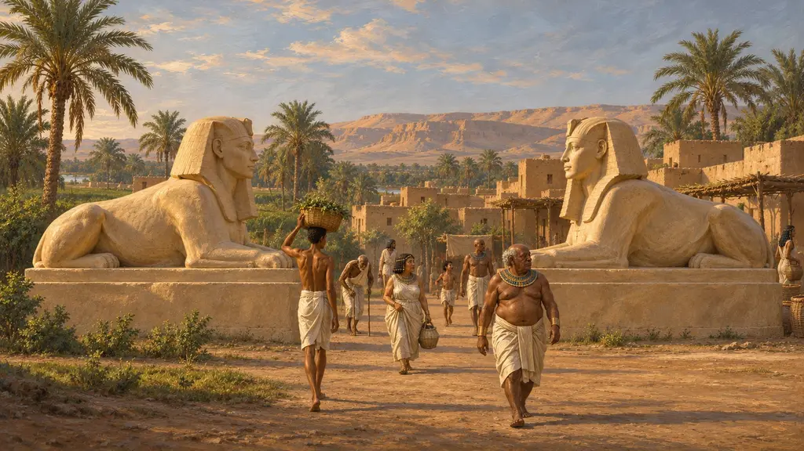
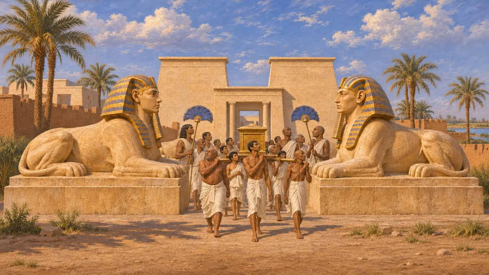
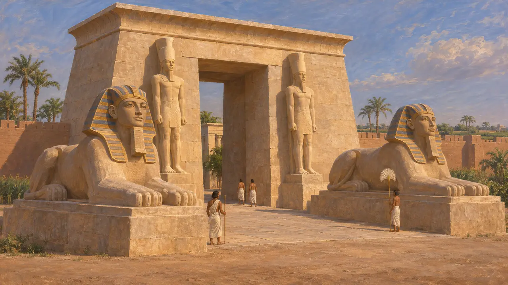
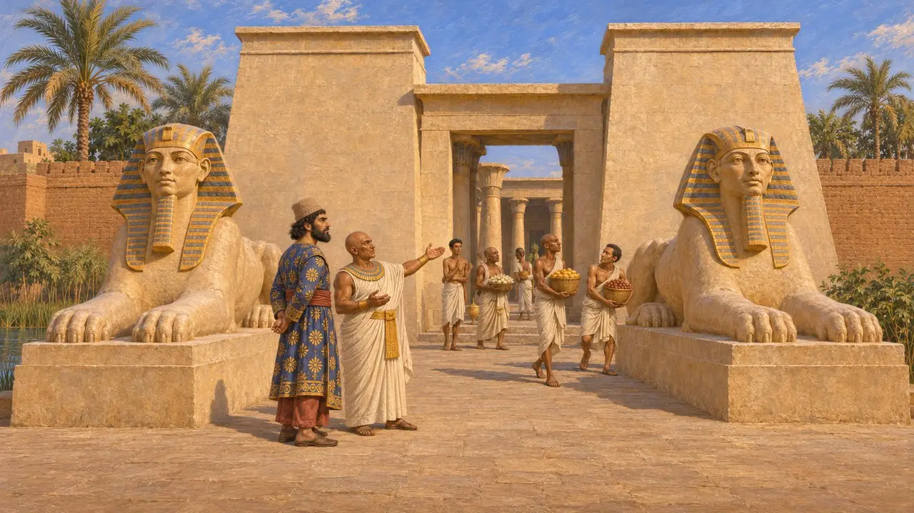
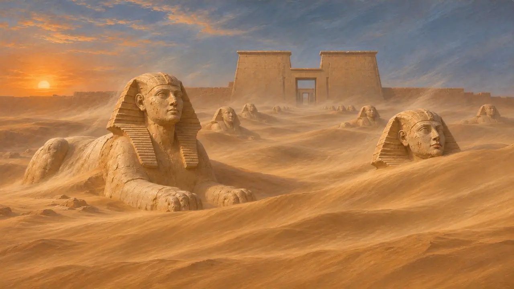
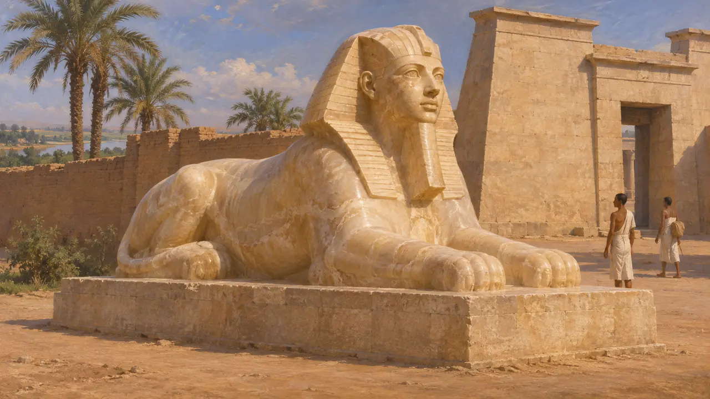

Coppia di sfingi
Coppie di sfingi di pietra lungo i viali dei templi egizi, Sais e Menfi, VI secolo a.C.
Ai templi egizi si accedeva spesso lungo una via processionale fiancheggiata da coppie di sfingi di pietra, leoni con la testa di un re o di un ariete. Erodoto racconta che Amasi, l'ultimo faraone dal lungo regno prima che Cambise conquistasse l'Egitto nel 525 a.C., fece erigere a Sais grandi sfingi dalla testa umana. Più tardi Strabone vide sfingi semisepolte nella sabbia nei pressi di Menfi, sebbene quel viale fosse stato costruito in gran parte dopo la conquista persiana.
Nel gioco: Il gioco propone la Coppia di sfingi tra i suoi edifici abitativi a Menfi. I veri viali di sfingi conducevano ai templi, non alle case, e il viale del Serapeo visto da Strabone fu tracciato per lo più nel IV secolo, dopo il periodo del gioco.

Viali per gli dèi
Nelle fontiDal Nuovo Regno in poi, i costruttori egizi fiancheggiavano il viale d'accesso al tempio, il dromos, con file di sfingi affrontate ai due lati del percorso. Gli esempi superstiti di Karnak hanno sfingi con testa di ariete, mentre altre hanno il volto del re regnante. Nei giorni di festa l'immagine del dio veniva portata lungo questi percorsi, perciò le sfingi incorniciavano le processioni, non le strade di ogni giorno.
R. H. Wilkinson, The Complete Temples of Ancient Egypt, 2000

Amasi a Sais
Racconto anticoErodoto racconta che Amasi, che regnò sull'Egitto fino a poco prima della conquista persiana, costruì un portale per il tempio di Atena a Sais, cioè della dea Neith. Aggiunge che Amasi vi eresse statue colossali e grandi sfingi dalla testa umana e vi fece trasportare enormi blocchi di pietra. Di Sais sopravvive poco in superficie, perciò la descrizione si basa soprattutto sul suo racconto.
Herodotus 2.175

Sais sotto il dominio persiano
Nelle fontiLa statua di Udjahorresnet, sacerdote e funzionario di Sais, ricorda che egli servì Cambise dopo il 525 a.C. Afferma di aver convinto il Re a cacciare gli stranieri dal tempio di Neith e a ripristinarne le rendite e i riti. Ciò suggerisce che il tempio abbellito da Amasi continuasse a funzionare sotto il nuovo signore persiano.
Statue of Udjahorresnet (Vatican Museums)

Strabone al Serapeo
Racconto anticoStrabone, che visitò l'Egitto circa cinque secoli dopo Cambise, descrive il Serapeo presso Menfi come situato in un luogo molto sabbioso. Le dune sospinte dal vento avevano sepolto alcune delle sue sfingi fino alla testa e altre fino a metà. Egli osserva che quella vista mostrava quanto potesse essere pericolosa una tempesta di sabbia per chiunque si recasse a piedi al tempio.
Strabo 17.1.32

Che cosa sorgeva a Menfi nel 525 a.C.
ContesoNel 1850 Auguste Mariette scoprì il Serapeo sgombrando il viale che aveva visto Strabone. Le sue sfingi risalgono per lo più alla XXX dinastia, nel IV secolo, molto dopo il 525 a.C. A Menfi sopravvivono sfingi più antiche, come la sfinge di alabastro del Nuovo Regno a Mit Rahina. La città fu spogliata per ricavarne pietra ed è scavata solo in parte, perciò gli storici non possono dire quanti viali di sfingi esistessero all'arrivo di Cambise.
D. J. Thompson, Memphis under the Ptolemies, 1988
Fonti
- Herodotus 2.175
- Strabo 17.1.32
- D. J. Thompson, Memphis under the Ptolemies, 1988
- R. H. Wilkinson, The Complete Temples of Ancient Egypt, 2000
- Statue of Udjahorresnet (Vatican Museums)